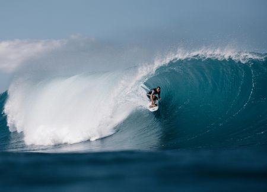

Image
- JPEG is best for photos with a lot of colors that are taken by phone such as landscapes or people.
- GIF is best for simple images with less color such as icons and cartoons but not good for detailed photos
- PNG is a good one to store details, no quality loss. good for logos or images that with sharp edges. It has transparency
- In order to resize a photo, we can use photo editor to make the picture the size we want
- CSS is used to change how it looks. If you resize with css, the broswer will download the full size image but with editing software, you can reduce both the pixel dimensions and file size, so the image can be optimized.